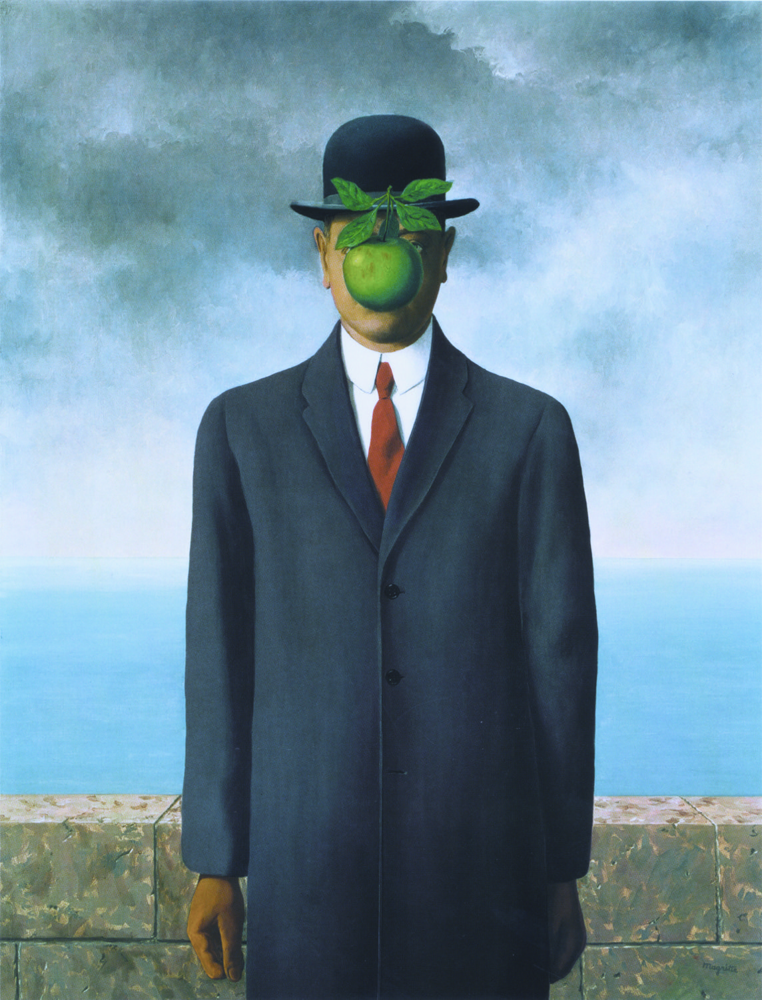
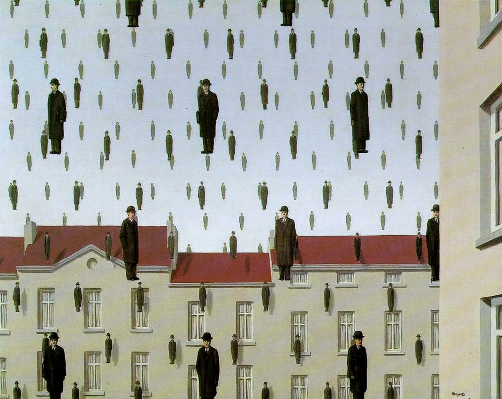
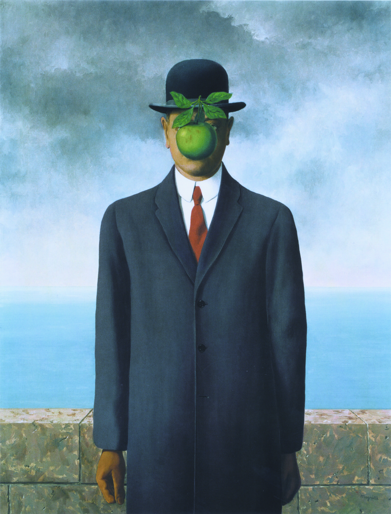
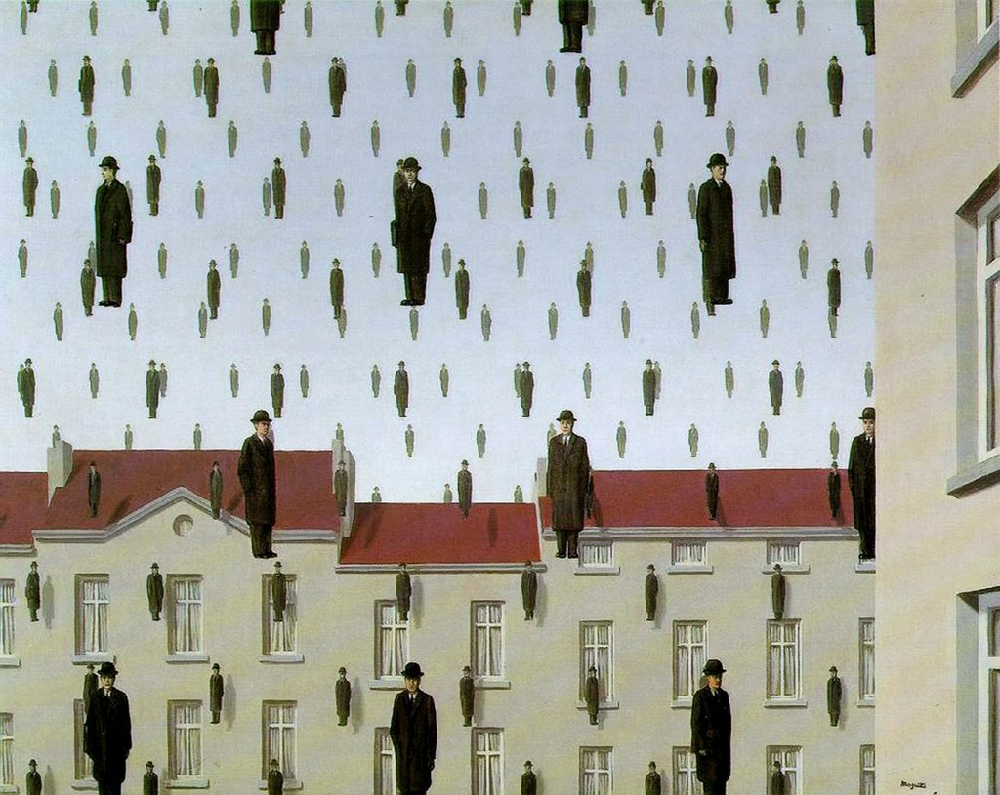
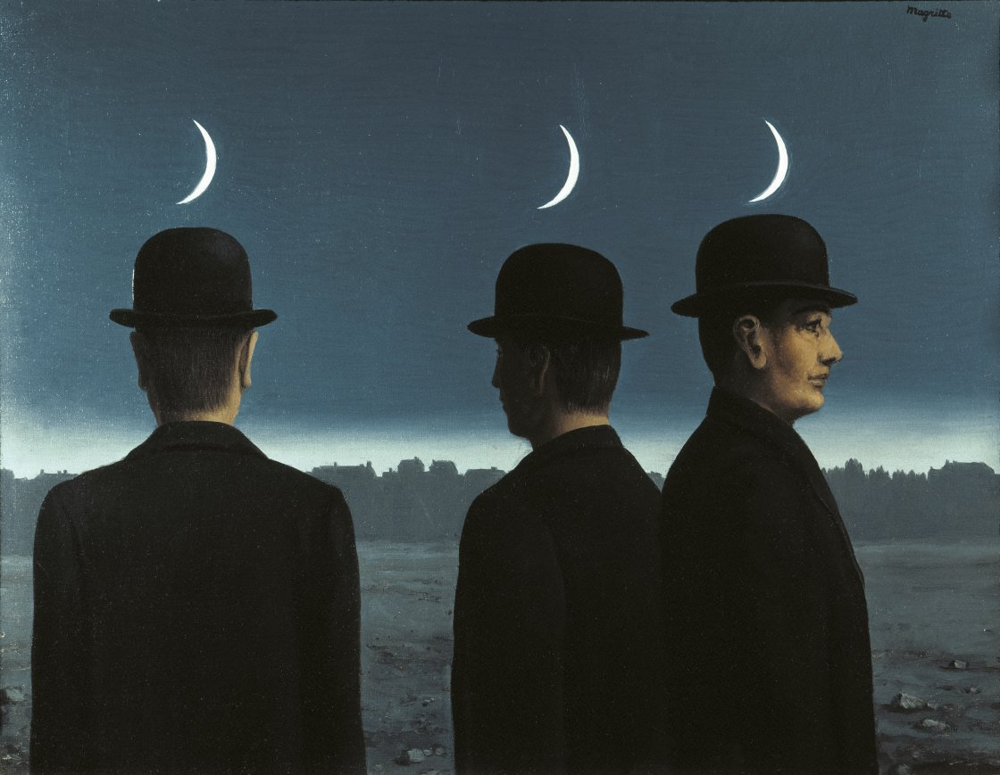
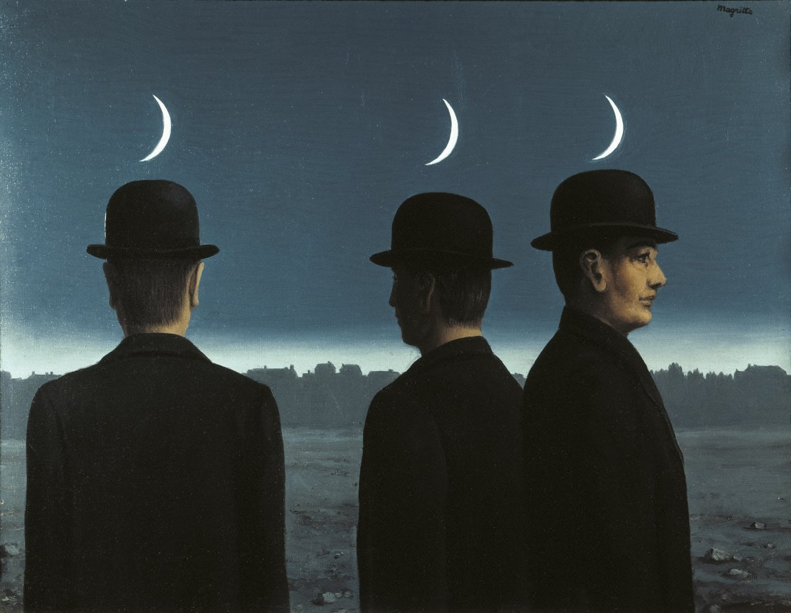

René Magritte
René Magritte, il pittore surrealista belga, ha catturato l'immaginazione del mondo con la sua straordinaria capacità di sfidare la percezione e la realtà. Nato nel 1898, Magritte ha creato un universo artistico unico, dove l'ordinario diventa straordinario e il familiare diventa misterioso. La sua tecnica precisa e dettagliata, combinata con l'uso di immagini enigmatiche e giochi di parole, ha trasformato la pittura in un esercizio di riflessione filosofica e sperimentazione concettuale. Attraverso opere come "Il tradimento delle immagini" con l'immortale frase "Questo non è una pipa", Magritte ha sfidato lo spettatore a interrogare la natura stessa della realtà e della rappresentazione. Le sue rappresentazioni di oggetti comuni, come cappelli, mele e pipe, prendono vita in modi sorprendenti e inaspettati, trasportando lo spettatore in un mondo di ambiguità e meraviglia. Magritte ha creato un legame indissolubile tra il visibile e l'invisibile, il reale e l'irreale, il noto e l'ignoto. Le sue opere, come "L'impero delle luci", "Il figlio dell'uomo" e "La condizione umana", continuano a ispirare e a provocare discussioni sull'essenza stessa della percezione e della verità. La sua eredità artistica è una testimonianza della potenza dell'immaginazione e della capacità dell'arte di trasformare il mondo che ci circonda.
 



 
